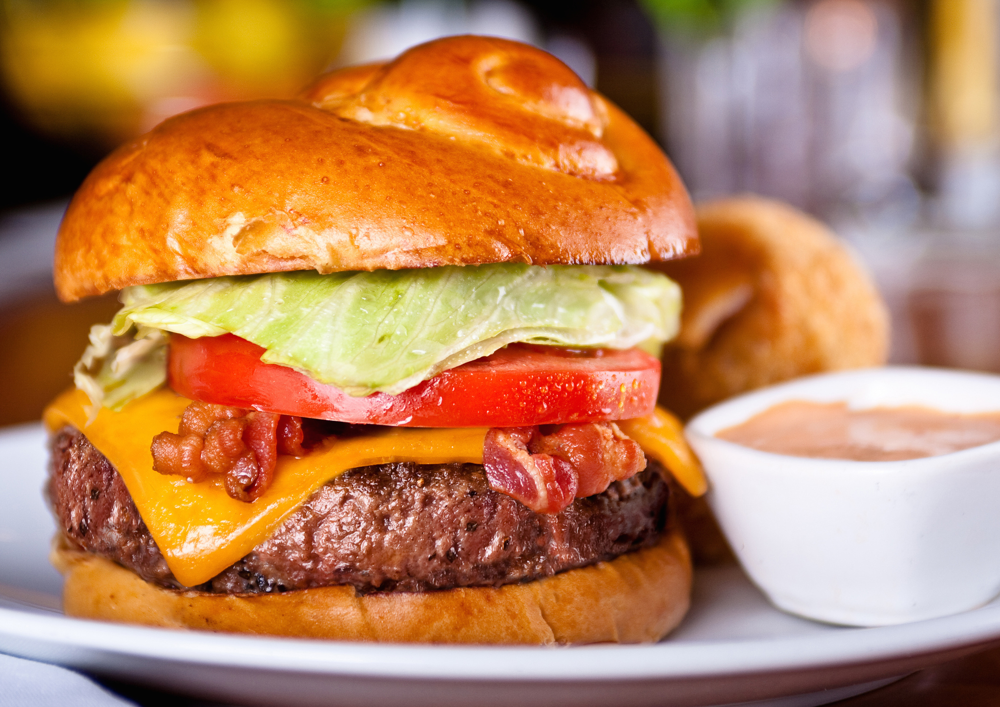
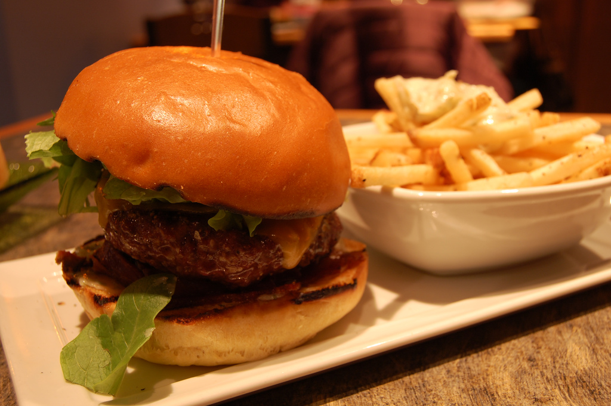

Award-winning burgers
Graze Magazine named our burgers the Best in St. Louis for 2014

Fresh ingredients bought locally
We're proud to use fresh ingredients from local Missouri and Illinois producers
Made-from-scratch milkshakes
Our creamy milkshakes feature homemade ice cream made from all-natural ingredients